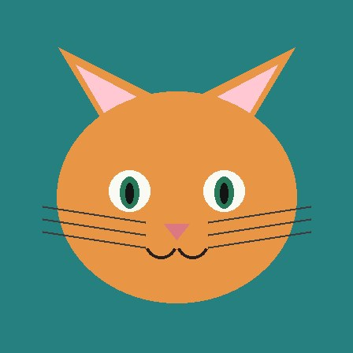

Preset pairs:


–
backend –latency –dims –registers –
The overlays above each image update with the selected mode — the foreground (cosine) or the smooth patch-norm field.
← All models · DINOv2-with-registers
use case · basics
The atom of everything this model does. Give it two images; it turns each into a 384-number descriptor and reports the cosine similarity — near 1 means "these look like the same kind of thing", low means "unrelated". Pick a preset pair or drop in your own, then flip the overlay between the cosine-to-CLS heatmap and the patch-norm map (smooth, because the register tokens removed the artifacts).
Preset pairs:

The overlays above each image update with the selected mode — the foreground (cosine) or the smooth patch-norm field.
Cosine tends to sit high for images that share a subject and composition and drop for genuinely different scenes. Because the model is self-supervised, it groups by overall look — subject, texture, layout — rather than a fixed label set. The register tokens don't change the global descriptor much; their job is to keep the patch features clean, which you can see in the even patch-norm map.